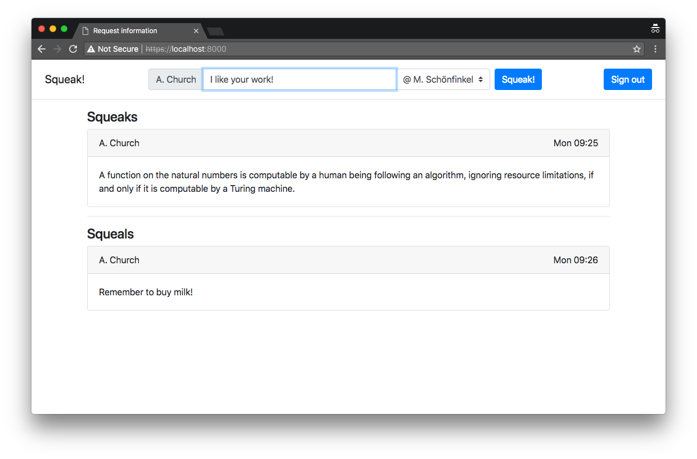
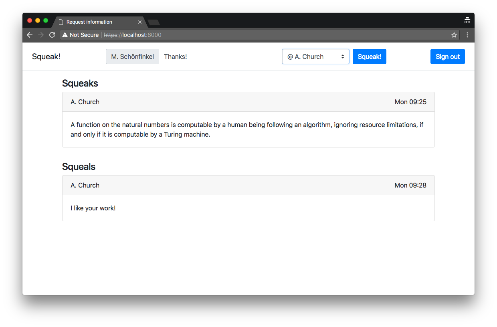
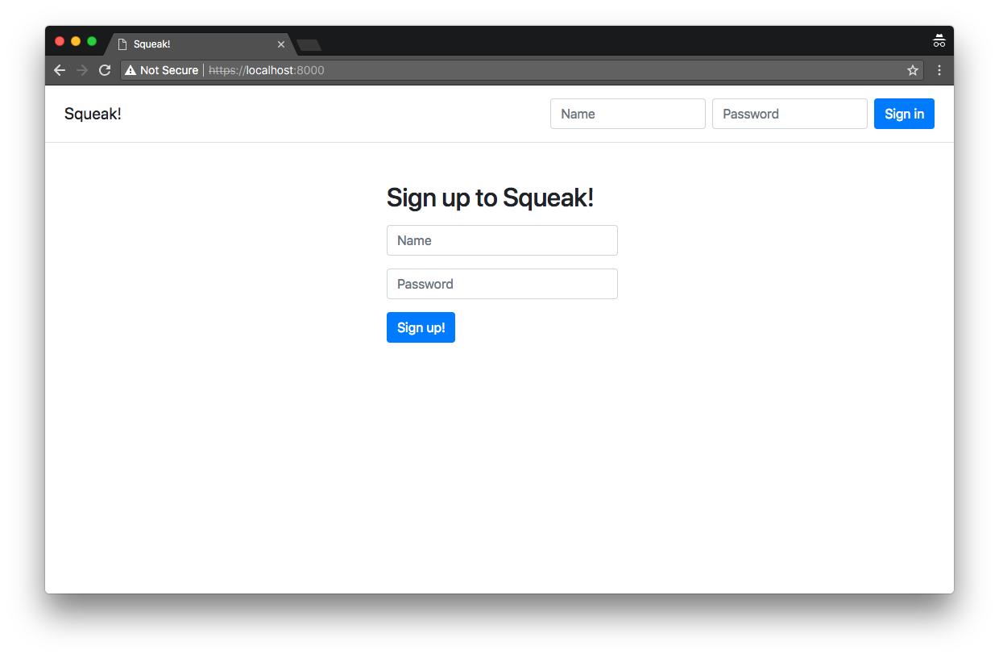

In this laboration we will continue developing Squeak! by adding proper storage for credentials, sessions, and squeaks. We will connect the application to the popular MongoDB, since MongoDB offers a free experimental tier with easy setup and excellent documentation.
The final product of this is a web application intended to be open to attacks. The material presented in this laboration should not be seen as suggestions on how to build secure web applications. On the contrary, we have deliberately chosen some elements to make sure that the application contains security flaws!
After completion of the steps below you are expected to have a working, but flawed, authenticated web application connected to MongoDB.
To make the database handling slightly more interesting we will extend Squeak! with private messages (squeals). To support this we make the following changes to the application.
The image above depicts the situation where A. Church is logged in, has posted one squeak about the Church-Turing thesis, and a squeal to himself reminding him to buy milk. The squeak form displays the default recipient @ Everyone. To send a private message to M. Schönfinkel complimenting him on his outstanding work A. Church selects his name from the list of recipients before squeaking.
After having sent the squeal to M. Schönfinkel it is available. Notice how all public squeaks are still visible, while the squeal about milk is not, since it was private to A. Church.
To implement the changes I suggest adding a custom select to the input group. See the HTML generated by the example application for inspiration. To generate the select options, get the public squeaks and the private squeals we will use database queries. More on this below!
To create a MongoDB database you have to create an Atlas account and an Atlas free tier cluster. Follow the guide and the dashboard guidance to create a project to install the MongoDB driver and a get a connection string for driver 3.6 or later.
MongoDB is a NoSQL database which allows you to easily store and retrieve objects without having to care much about the structure of the database (for toy projects like this, in any case; for real projects more care is needed). In MongoDB, a database holds collections of objects. Both databases and collections are created on the fly if they don't exist.
A key behind the success of Node.js is the abundant use of asynchronous programming. While some libraries provide synchronous versions of the functions (e.g., File System) many do not, which has a rather big impact on the way one programs. MongoDB belongs to the latter category and provides only an asynchronous API that can be used by passing continuations (callbacks) or using the new ES6 Promises. Together with async and await programming asynchronously with promises is almost as easy as writing synchronous code. See, e.g., MDN on using promises.
For brevity, the code examples below lack error handling. Defensive programming requires you to properly handle the exception the operations may cause!
The NPM mongodb package page contains a good getting started that explains how to connect to the server, how to create a database, how to create collections, how to add documents to collections and how to query collection. For detailed information look at the driver documentation for version 3.x. For the functionality the driver provides see the API.
In the context of laboration 2 it might be interesting to read on the authentication mechanism SCRAM used in MongoDB. Under what circumstances is it safe to include the password in the connection URL?
We are going to use three collections for Squeak!, one for the credentials, one for valid sessions and one for the squeaks. To connect, select the database and the collections simply use
MongoClient.connect(mongoURL)
.then((cluster) => {
mongoCluster = cluster;
let db = cluster.db('Squeak!');
squeaks = db.collection('squeaks');
credentials = db.collection('credentials');
sessions = db.collection('sessions');
let server = https.createServer(options, app);
server.listen(8000);
}
)
.catch((error) => {
console.log(error);
}
);This selects the database Squeak!, and the collections credentials,
sessions and squeaks. If they are not present, they will be created on use. Notice the use of promises.
To migrate the credential we need to change the code for signin and signup to use the credentials collection.
To diversify the NoSQL injection attacks we will not store the passwords in a secure way in MongoDB. Instead, the credentials will be stored as username/password pairs, e.g.,
{ username : "daniel", password : "fisksoppa"}To authenticate provide an asynchronous function that queries the database for a username and password pair. This can be done using the findOne collection method that takes a query (and an optional projection). In the case below, we look for an entry corresponding to the username and password. If such an entry is found, we know that the user exists and has provided the right password.
async function authenticate(username, password) {
let user = await credentials.findOne({username: username,
password: password});
return user !== null;
}To add a user provide an asynchronous function that adds a username and password pair to the credentials collection. This can be done using the insertOne collection method that takes a document (object) and inserts it into the database.
async function addUser(username, password) {
await credentials.insertOne({username: username, password: password});
}Don't forget check if the user exists before adding! See the MongoDB reference manual or the MongoDB API for more information.
To migrate the session handling we need to change the code for signin, signup and signout. Similar to laboration 3 we store only the valid session identifiers in the server state. This allows for a simpler future transition to a more RESTful API.
async function findSession(sessionid) {
return await sessions.findOne({id: sessionid});
}New sessions identifiers are allocated as 64 bytes of random data. There is a minuscule risk that the newly allocated identifier is the same as an already existing one. If this occurs a situation akin to session theft occurs. How substantial is this risk? Large enough to warrant defensive programming?
async function newSession() {
let sessionid = crypto.randomBytes(64).toString('hex');
await sessions.insertOne({id: sessionid});
return sessionid;
}To invalidate a session we find remove the corresponding session information from the database. This can be done using the findOneAndDelete collection method.
async function invalidateSession(sessionid) {
return await sessions.findOneAndDelete({id: sessionid});
}
Squeaks now contain the recipient in addition to the time of the squeak, the name of the squeaking user and the contents of the squeak. The username is fetched from the session cookie, while the recipient and the squeak contents are taken from the body
of the request in line with My first social media app. For squeaks targeted at specific users, the recipient is a string containing the user-name. For public squeaks,
the recipient string is
"all".
async function addSqueak(username, recipient, squeak) {
let options = {weekday: 'short', hour: 'numeric', minute: 'numeric'};
let time = new Date().toLocaleDateString('sv-SE', options);
await squeaks.insertOne({ name: username,
time: time,
recipient: recipient,
squeak: squeak});
}To render the main page we need need to be able to fetch the public squeaks as well as the squeaks intended for a specific user.
async function getSqueaks(recipient) {
return await squeaks.find({ recipient : recipient }).toArray();
}As suggested in the Stored XSS attack, use an Express.js compatible template engine such as mustache or handlebars. The example application uses mustache to render the pages. The main page uses the username, a list of users, the public squeaks and the squeaks sent to the user to render the page. The interested can have a look at the app.mustache template.
To render the main page fetch the users, the public squeaks and the private squeaks of the user. This can be done by using Promise.all() that take a list of promises and gives a list of results.
Promise.all([getUsers(), getSqueaks('all'), getSqueaks(username),]).then(
results => {
res.render('app', {
username: username,
users: results[0],
squeaks: results[1],
squeals: results[2]
});
});
The renderer is passed the username, the user database for rendering the selection, the public squeaks, i.e., squeaks with recipient "all", and the squeaks with the user as the recipient. The username is taken from the session
cookie.
The final product of this laboration is a working, but flawed, authenticated social media web application connected to MongoDB. The application should support squeals, i.e., private squeaks. To squeak or squeal a user must log into the application.
After successful login, the user can squeak to all users or squeal to a specific user.
The application should work similarly to the example application. If you want to try it out you can log in using the names of the participants in the screenshots (mind the spaces! and password
12345678! Notice that, for security reasons, squeaking, squealing and user registration are disabled in the example application.